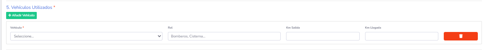
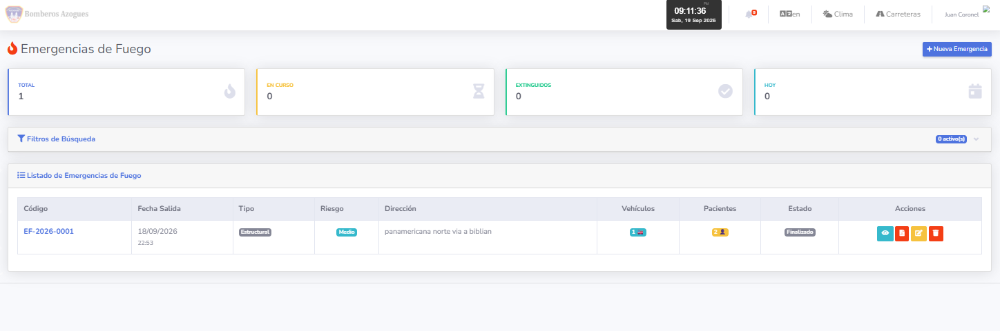

🔥
MANUAL DE USUARIO
Módulo de Emergencias de Fuego
Sistema de Gestión de Bomberos
BOM Azogues
Versión 1.0 — Septiembre 2026
📋 Índice de Contenidos
- ¿Qué es el módulo de Emergencias de Fuego?
- ¿Cómo acceder al módulo?
- Registrar una nueva emergencia de fuego
- Añadir vehículos utilizados
- Añadir personal que atiende
- Añadir pacientes / víctimas
- Añadir herramientas utilizadas
- Añadir insumos utilizados
- Guardar la emergencia
- Ver el listado de emergencias
- Ver el detalle de una emergencia
- Editar una emergencia
- Adjuntar archivos (fotos del incendio)
- Generar el PDF del parte de bomberos
- Eliminar una emergencia
- Ver estadísticas
- Preguntas frecuentes
1. ¿Qué es el módulo de Emergencias de Fuego?
Este módulo permite registrar incendios y emergencias de fuego que atiende el cuerpo de bomberos. Cada emergencia puede incluir:
- Datos generales: fecha, hora, dirección, tipo de fuego
- Recursos utilizados: agua, espuma, químico (en litros)
- Herramientas utilizadas: hachas, mangueras, escaleras, etc.
- Vehículos: bomberos, cisternas, rescate
- Personal que atendió: bomberos, conductores, jefe de incidente
- Pacientes/víctimas: ilesos, heridos, fallecidos
- Insumos médicos usados
- Archivos adjuntos: fotos del incendio
2. ¿Cómo acceder al módulo?
- Inicia sesión en el sistema
- En el menú lateral izquierdo, busca "Emergencias de Fuego" 🔥
- Haz clic para desplegar el submenú
- Verás 3 opciones: Lista, Nueva y Estadísticas

Figura 1: Ubicación del módulo en el menú lateral
3. Registrar una nueva emergencia de fuego
Paso 1: Acceder al formulario
En el menú, haz clic en "Emergencias de Fuego" → "Nueva Emergencia".

Figura 2: Formulario de nueva emergencia
Paso 2: Completar Datos Generales
| Campo | Descripción | ¿Obligatorio? |
|---|
| Fecha/Hora Salida | Cuándo salió la unidad | ✅ Sí |
| Llegada al sitio | Cuándo llegó al incendio | No |
| Control del fuego | Cuándo se controló | No |
| Extinción total | Cuándo se extinguió | No |
| Llegada a base | Cuándo regresó | No |
| Dirección | Dirección del incendio | ✅ Sí |
| Referencia | Punto de referencia | No |
| Parroquia | Selecciona de la lista | No |
| Sector | Sector o barrio | No |
| Motivo del llamado | Por qué se llamó | ✅ Sí |
| Tipo de fuego | Estructural, Forestal, etc. | ✅ Sí |
| Nivel de riesgo | Bajo, Medio, Alto, Crítico | ✅ Sí |
| Causa probable | Eléctrica, Intencional, etc. | No |
| Área afectada (m²) | Tamaño del incendio | No |
| Pérdidas estimadas | Valor económico | No |
Tipos de fuego:
🏠 Estructural: Casas, edificios
🌲 Forestal: Vegetación
🚗 Vehicular: Autos, motos
🗑️ Basura: Contenedores
☣️ Químico: Materiales peligrosos
🏭 Industrial: Fábricas
Paso 3: Completar Recursos Utilizados
- Agua utilizada (litros)
- Espuma utilizada (litros)
- Químico utilizado (litros)
Paso 4: Completar Víctimas
- Ilesos — Personas sin daño
- Heridos — Personas con lesiones
- Fallecidos — Personas fallecidas
- Requirió apoyo externo — Marca si aplica
- Detalle del apoyo — Quién ayudó
4. Añadir vehículos utilizados
- En la sección "5. Vehículos Utilizados", haz clic en "+ Añadir Vehículo"
- Selecciona el Vehículo de la lista
- Escribe el Rol (Bomberos, Cisterna, Rescate...)
- Ingresa el Km de Salida y Km de Llegada

Figura 3: Sección de vehículos con kilometraje
5. Añadir personal que atiende
- En la sección "4. Personal que Atiende", haz clic en "+ Añadir Personal"
- Selecciona el Funcionario
- Escribe su Rol (Bombero, Conductor, Jefe de Incidente...)
6. Añadir pacientes / víctimas
- En la sección "6. Pacientes / Víctimas", haz clic en "+ Añadir Paciente"
- Completa los datos básicos
- Selecciona la Condición (Ileso, Herido, Fallecido, Desconocido)
- Especifica el Tipo de lesión (Quemadura, inhalación...)
- Indica el Hospital destino si aplica
7. Añadir herramientas utilizadas
- En la sección "Herramientas Utilizadas", haz clic en "+ Añadir Herramienta"
- Selecciona la Herramienta de la lista (hacha, manguera, escalera...)
- Indica la Cantidad
- Agrega Observaciones si es necesario
Figura 4: Sección de herramientas utilizadas
8. Añadir insumos utilizados
- En la sección "7. Insumos Utilizados", haz clic en "+ Añadir Insumo"
- Selecciona el Insumo de la lista
- Indica la Cantidad
- Agrega Observaciones
9. Guardar la emergencia
- Al final del formulario, haz clic en "Guardar Emergencia"
- El sistema validará los datos
- Si todo está bien, te redirigirá al detalle
Verás un mensaje verde: "Emergencia de fuego registrada correctamente"
10. Ver el listado de emergencias
En el menú, haz clic en "Emergencias de Fuego" → "Lista de Emergencias".

Figura 5: Listado de emergencias de fuego
Filtros disponibles
- Buscar por código, dirección o motivo
- Estado: En curso, Controlado, Extinguido, etc.
- Tipo de fuego
- Nivel de riesgo
- Rango de fechas
11. Ver el detalle de una emergencia
Desde el listado, haz clic en el código o en el botón 👁️ Ver.

Figura 6: Detalle completo de la emergencia de fuego
Secciones del detalle
- Datos Generales
- Magnitud y Recursos (área, pérdidas, agua, espuma, víctimas)
- Vehículos Utilizados
- Personal que Atendió
- Pacientes / Víctimas
- Herramientas Utilizadas
- Insumos Utilizados
- Archivos Adjuntos
12. Editar una emergencia
- Desde el detalle, haz clic en "Editar"
- Modifica los campos que necesites
- Puedes añadir o eliminar vehículos, personal, pacientes, herramientas e insumos
- Haz clic en "Actualizar Emergencia"
Al guardar, el sistema restaura el stock de insumos anteriores y descuenta el de los nuevos.
13. Adjuntar archivos (fotos del incendio)
- Ve al detalle de la emergencia
- Busca la sección "Archivos Adjuntos"
- Haz clic en "Subir Archivos"
- Selecciona las fotos o documentos
- Haz clic en "Subir"
Límites
- Máximo 10 MB por archivo
- Máximo 50 MB por emergencia
14. Generar el PDF del parte de bomberos
- Ve al detalle de una emergencia
- Haz clic en "Generar PDF" o "PDF Parte de Bomberos"
- Se abrirá el PDF en una nueva pestaña

Figura 7: PDF del parte de bomberos
Contenido del PDF
- Encabezado con logo y código
- Datos Generales (fechas, dirección, parroquia, tipo, riesgo)
- Recursos Utilizados (agua, espuma, químico, víctimas)
- Vehículos Utilizados
- Personal que Atendió
- Pacientes / Víctimas
- Herramientas Utilizadas
- Insumos Utilizados
- Observaciones Generales
- Firmas (3 bloques con espacio para rúbrica)
15. Eliminar una emergencia
- Desde el detalle o el listado, haz clic en "Eliminar"
- Confirma la acción
Cuidado: Esta acción no se puede deshacer. El stock de insumos se restaurará.
16. Ver estadísticas
- En el menú, haz clic en "Emergencias de Fuego" → "Estadísticas"
- Ajusta el rango de fechas

Figura 8: Panel de estadísticas
Qué verás
- Tarjetas resumen: Total, En curso, Extinguidos, Agua usada, Heridos, Fallecidos, Pérdidas
- Gráficos: Tendencia, Por Tipo, Por Riesgo, Por Estado
- Top 5: Vehículos, Personal, Causas
17. Preguntas frecuentes
❓ ¿Cuál es la diferencia con el módulo prehospitalario?
El prehospitalario es para ambulancias y atención médica, mientras que el de fuego es para incendios y combate de fuego.
❓ ¿Puedo añadir varias herramientas?
Sí, haz clic en "+ Añadir Herramienta" cuantas veces necesites.
❓ ¿Qué pasa si la parroquia no está en la lista?
Contacta al administrador para que la agregue en Parametrización → Parroquias.
❓ ¿Las herramientas se descuentan del inventario?
No, las herramientas no se descuentan automáticamente. Solo se registran como "utilizadas".
❓ ¿Los insumos médicos sí se descuentan?
Sí, los insumos médicos sí se descuentan y se restauran al eliminar la emergencia.
❓ ¿Cómo veo las fotos del incendio?
En el detalle, sección "Archivos Adjuntos". Haz clic en la miniatura.